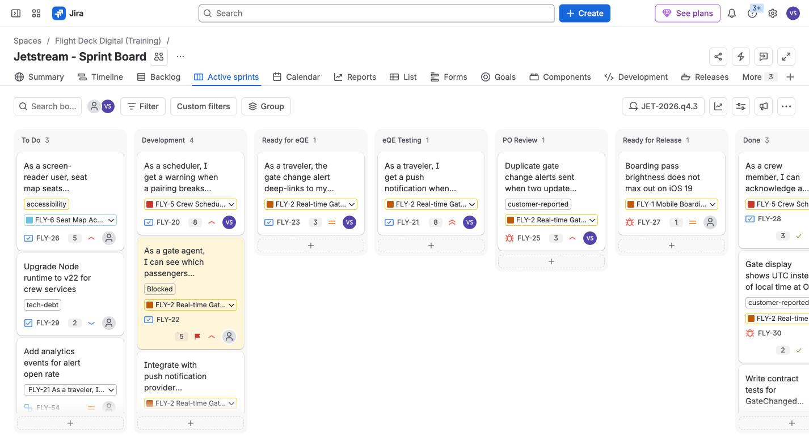

Welcome aboard
Jira Flight School
Three levels of hands-on training, from your first board to Plans, eazyBI, Zephyr, Rovo agents and Claude connected to Jira through MCP. Every exercise runs against a live sandbox built on the Golden Template.
| Flight | Destination | Gate | Duration | Status |
|---|---|---|---|---|
| JFS101 | GROUND SCHOOL | L1 | 3H30 | BOARDING |
| JFS150 | ROVO FLIGHT MANUAL | ALL | 1H30 | BOARDING |
| JFS201 | FIRST OFFICER | L2 | 5H00 | ON TIME |
| JFS250 | JQL SIMULATOR | L2+ | SELF | ON TIME |
| JFS301 | CAPTAIN | L3 | 6H30 | ON TIME |
| JFS350 | CLAUDE + MCP | L3 | 1H00 | ON TIME |
| JFS399 | CAPSTONE IROPS DAY | L3 | 1H00 | FINAL CALL |
Three levels, one upgrade path
Most people start at Ground School. Pass each level's checkride to move up. The Ground School checkride doubles as the Rovo readiness check, the gate to getting Rovo turned on.
Spaces, navigation, everyday work, boards, Rovo 101 and a preview of the Golden Template.
Golden Template in depth, refinement and planning, JQL, dashboards and reports, Zephyr essentials.
Advanced JQL and flow metrics, Plans and capacity, eazyBI, Zephyr at scale, automation, agents, MCP, Git.
Skills that actually move your team's numbers
Work the Golden Template
Two-board model, standard statuses with exit criteria, sprint naming and Definition of Ready.
Fly with Rovo
Chat versus agents, summaries, natural-language search and prompt patterns you can trust and verify.
Speak JQL
From filters to history operators that measure bounce-backs, carry-over and aging work.
Plan capacity
Use Plans to forecast across teams, model scenarios and expose dependencies early.
Report with eazyBI
Build velocity, cycle-time and quality reports that leadership can actually read.
Test with Zephyr
Trace stories to tests to defects, and gate releases on real coverage.
Claude + MCP
Connect Claude to Jira safely. Know when it helps, when it hurts metrics and how to verify.
Jira ↔ Git
Branches, commits and PRs that update Jira automatically through the development panel.
The FLY sandbox
Every mission runs against Flight Deck Digital (Training), a live Jira space set up the way the Golden Template recommends. It has real sprint history, failed eQE rounds, blockers and a few deliberate data-quality problems for you to find.
- Space
- FLY · company-managed Scrum
- Boards
- Jetstream - Sprint Board · Jetstream - Backlog Readiness
- Epics
- Boarding Pass 2.0 · Gate Change Alerts · Bag Tracker · IROPS Rebooking · Crew API · Seat Map Accessibility
- Sprints
- JET-2026.q4.1 → JET-2027.q1.1
- Releases
- Mobile 5.2 · Mobile 5.3 · Gate Ops 1.0 · Bag Tracker Beta

Earn miles. Earn your wings.
Each mission and checkride you finish earns miles, saved in this browser. Climb from Ground Crew to Chief Pilot. The instructor may run a live leaderboard during class.
Status: Ground Crew
0 missions and checkrides logged ·
Pre-flight checklist
Complete these before your first live session. Your progress saves automatically.
How we fly together
[VS] Seat map zoom story, and never delete other people's work.